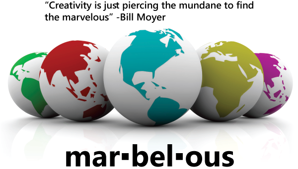

testimonials
What our Clients are saying…
"Perfect and great service as usual. You make this part of my job so much fun. I wish all my partners were like you"
Cinderella Man
"The crew jackets are fantastic. We appreciate you going the extra mile and especially working around our crazy shoot schedule."
Breach
"This was a tricky crew gift we gave, but you pulled it off!"
The Incredible Hulk
"We have been impressed with the details of your work, the questions that you have asked, and the diligence with which you have responded to queries have been exceptional"
Nikita
"You constantly amaze us- you are so fast and reliable- so glad we found you!"
Private Eye’s
"Don was right. All I needed to do was call you and it was off my plate"
Shadow Hunters
"You have exceeded our expectations- the idea’s, execution and eye for details is uncanny"
The EXPANSE
"I never had to chase you down because you are always accessible- even off hours. Working with you is a no brainer"
Handmaid’s Tale
"Wow, I have never had such a wonderful experience-normally this process of finding a crew gift is a nightmare."
Burden of Truth
"You were correct when you told us the jackets could be turned around in 7 days. You have been a lifesaver and made the process really easy. Our cast & crew are thrilled"
The BOYS
" You are our go-to each season because you understand exactly what we want. Never disappointed and always deliver on time"
Suits
"There was latterly no disruption or interference in my daily duties and arranging for the crew gifts. This is an exception to what I am used to. We will never use anyone else."
Work It
"Thanks for the crew bottles and looking forward to working with you on the gifts"
The BEAVERTON
"A huge thank you for arranging the delivery of gifts to LA office. Everyone was impressed how seamless it was."
Work’s Moms
"who knew it could be so easy!"
Zombies
"Everyone is thrilled with the team caps and we LOVE the unusual embroidery- very cool "
Kevin Newman W5